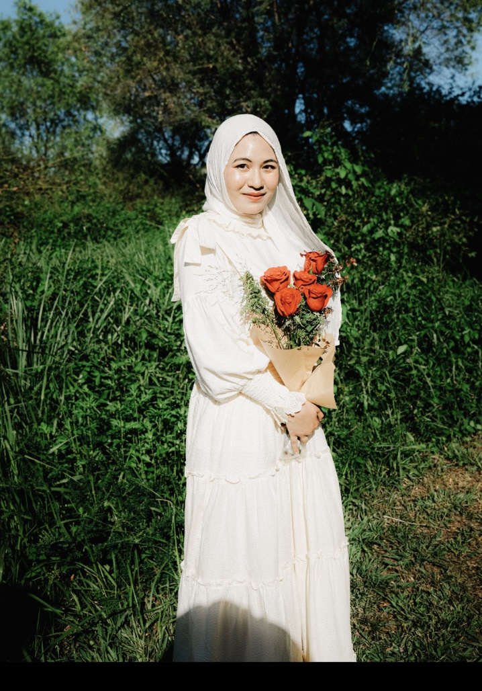

Media Kit Attira Azzahra · 2026 Rate Card
Beauty & Skincare · Fashion · Lifestyle · Food · Travel
View rate cardHi, I'm Attira!
A Singapore-based content creator sharing beauty, lifestyle, food, and travel through the lens of an Indonesian living abroad.
After three years in South Korea and now building a life in Singapore, I've developed a love for discovering new cultures, experiences, and hidden gems — turning them into relatable stories my audience can connect with.
My content focuses on honest recommendations, aesthetic storytelling, and creating a trusted space where my community feels like they're getting advice from a friend.

Who follows me
Where they are
Then Singapore, South Korea, Malaysia & Japan — Indonesians planning a Singapore trip, and expats already living here. Most active 6–10pm GMT+8.
Brands I've worked with


Rate Card
All prices SGD · valid to Dec 2026
Let's work together
Send me the product, timeline and budget — I'll come back with a concept, not a template.